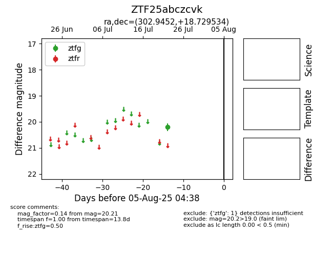

Target ZTF25abczcvk at 2025-08-05 04:38, see:
FINK: fink-portal.org/ZTF25abczcvk
Lasair: lasair-ztf.lsst.ac.uk/objects/ZTF25abczcvk
ALeRCE: alerce.online/object/ZTF25abczcvk
alt names
ZTF25abczcvk (ztf,fink)
coordinates:
equatorial (ra, dec) = (302.9452,+18.72953)
galactic (l, b) = (58.9459,-8.22391)
photometry
last ztfg=20.21
1 ztfg detections
